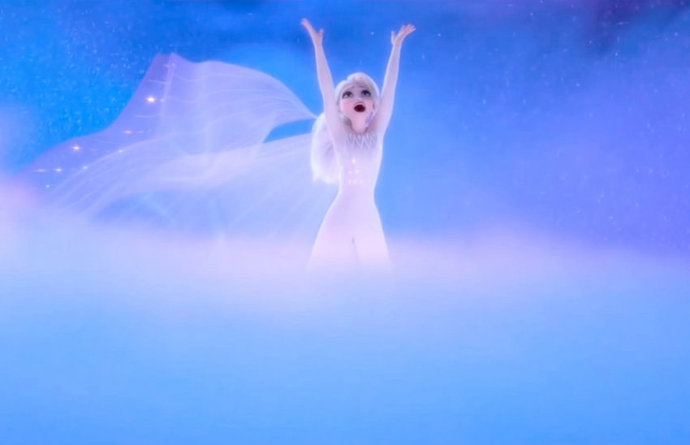

Elsa of Arendelle is a fictional character who appears in Walt Disney Animation Studio 53rd animated film Frozen and its sequel Frozen II. She is voiced primarily by Broadway actress and singer Idina Menzel. She is voiced by Eva Bella as a young child and by Spencer Ganus as a teenager in Frozen. In Frozen II, young Elsa is voiced by Mattea Conforti (at the start of the film) and Eva Bella (archive audio).
a Danish fairytale by Hans Christian Andersen. In the Disney film adaptation, she is introduced as a princess in the fictional Scandinavian Kingdom of Arendelle, heiress to the throne and the elder sister of Princess Anna (Kristen Bell). Elsa has the magical ability to create and manipulate ice and snow. She inadvertently sends Arendelle into an eternal winter on the evening of her coronation. Throughout the film, she struggles first with controlling and concealing her abilities and then with liberating herself from her fears of unintentionally harming others, especially her younger sister.
The Snow Queen character, neutral but cold-hearted in the original fairytale and villain in numerous adaptations of the character, proved difficult to adapt to film due to her transparent depiction. Several film executives, including Walt Disney, attempted to build on the character, and a number of scheduled film adaptions were shelved when they could not work out the character. Buck and his co-director, Jennifer Lee, were ultimately able to solve the dilemma by depicting Elsa and Anna as sisters. As much as Anna's struggle is external, Elsa's is internal. This led to Elsa being gradually rewritten as a sympathetic, misunderstood character.
Elsa has received largely positive reception from reviewers, who praised her complex characterization and vulnerability. Menzel was also widely praised for her vocal performance of Elsa, especially that of her performance of the song "Let It Go".
